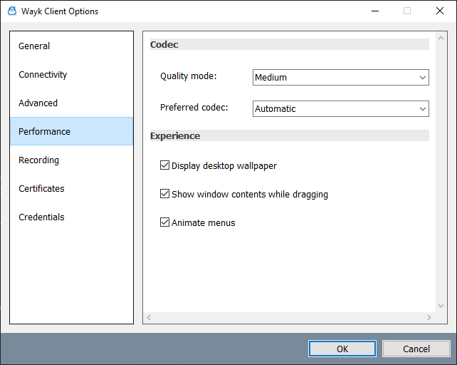

Wayk Client Performance
Performance Options
Several options are available that affect the performance and experience of the connection.

| Setting | Description |
|---|---|
| Quality mode | Low, medium (default) or high. Higher quality provides a better image quality, but performance will be worse. |
| Preferred codec | The codec to use for image compression. JPEG and GFWX are tuned to provide similar performance characteristics at the equivalent quality modes. |
| Display deskop wallpaper | Disable to replace desktop wallpaper on the Agent with a blank background. Windows Agents only. |
| Show window contents when dragging | Disable to prevent window contents from being rendered during drag operations. Windows Agents only. |
| Animate menus | Disable to turn off animation effects on menus. Windows Agents only. |
Further performance options are available. These can be configured using the Command Line.
| Setting Name | Description | Values |
|---|---|---|
| MaxFrameRate | The maximum number of frames per second for the Agent to try and transmit | Frames per second from '1' to '30' (default) |
| DesktopWidth | When using RDP virtual sessions, the requested width of the remote display. '0' accepts the default value from the Agent. | Width in pixels from '0' (default) to '3840' |
| DesktopHeight | When using RDP virtual sessions, the requested height of the remote display. '0' accepts the default value from the Agent. | Height in pixels from '0' (default) to '2160' |
Recommended Settings
For optimum performance, configure "Low" or "Medium" quality modes and disable all the "Experience" effects (desktop background, show window contents when dragging, and animate menus)/